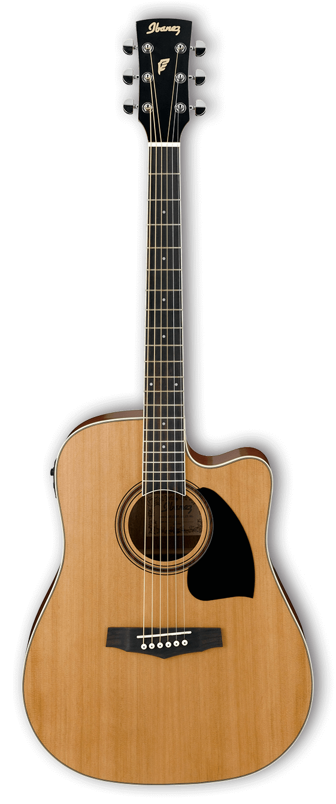

Musical Vilches
Guitarras

Guitarra Acustica - Harley Benton R3
Fantastica para inciciarse sin necesidad de conectarse por cables o personas que busquen un sonido mas natural

Guitarra Acustica - Marble L6
De bonita madera caoba, acabado claro y de 3 cuerdas de nylon y 3 de acero. Muy recomendable para musicos de folklore


Derechos Reservados
Aviso Legal